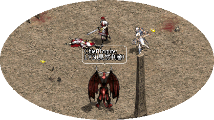
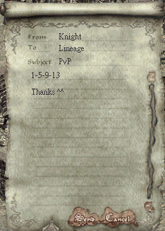

|
天堂．真相 Lineage3D.com
考你眼光！誰是PvP王四連環競猜大賽

此活動已經結束，結果以下：
比賽結果：
天堂職業制PvP大賽有結果喇！PvP王分別是月之宿命、三井壽14號、HKlwc99及魔之使徒(3-8-12-16)！經本網再三覆核之後，證實在云云520名考你眼光！誰是PvP王四連環競猜大賽報名者中，竟然沒有人能夠完全猜中賽果！有見及此，本網特設安慰獎給予最接近賽果的玩家，只要猜中三名冠軍及一名亞軍，便可得品質藍寶石一顆，得獎名單如下：
闇影狂龍、一大咀一、星光小生生、Libra、CrAzYwOmEn、一剎之龍騎一、戀之小詩
本網會有專人聯絡得獎者及送上獎品，在此非常感謝各大玩家的熱心參與！
比賽形式：
香港官方最近舉辦了職業制PvP比賽，現在已經到達四強階段！相信大家都有自己心目中的人選，究竟誰的眼光最獨到，能夠預先知道誰是真正的PvP王呢？現在有機會了，詳情如下：
參加辦法：
費用全免！限香港太陽神伺服器，大家只要將各職業心水的PvP王代號，在天堂中以郵件方式寫信給"Lineage"，"Knight"或"山101火"便可以參加競猜大賽！（假如收信人道具滿了，請嘗試其他名稱，或稍後再試）
代號如下（排列次序可能與官方的不一樣，敬請留意）：
王族：
1. PT1
2. 藍燄
3. 月之宿命
4. 小小的王子 |
騎士：
9. 燄影
10. Tataka
11. 疾風之邊
12. HKlwc99 |
妖精：
5. 諸星
6. 登圖貝勒
7. Kissmehk
8. 三井壽14號 |
法師：
13. 靈羊
14. TheGod
15. Drake
16. 魔之使徒 |
＊鳴謝月之宿命、Fatty、疾風之邊及Drake提供以上4強名單，如有錯漏請電郵告之
^^
例子：假如我認為各職業的PvP王分別是1.PT1，5.諸星，9.燄影及13.靈羊的話，那麼你的信件內容便要像下圖一樣：

獎品：
設頭獎一名，二獎一名及三獎三名，如下：（由天堂．真相代表Lineage讚助）
頭獎：祝福的對盔甲施法的卷軸（市值420,000)
二獎：對武器施法的卷軸（市值74,000）
三獎：品質藍寶石（市值35,000）
同時，閣下的角色名稱會在天堂．真相首頁當眼位置公佈最少一個月。
開始接受報名日期：
2002年8月20日 00:00（以信件中的時間為準）
注：遊戲不是以先到先得方式決定得獎者或名次，因此大家不用太急報名
^^
截止日期：
2002年8月24日中午12:00正（以信件中的時間為準）
比賽日期：
準決賽：2002年8月24日14:15開始（奇岩格鬥場）
總決賽：2002年8月25日14:15開始（奇岩格鬥場）
得獎名單公佈日期：
2002年8月26日，得獎人士會有專人聯絡及頒發獎品。
其他事項：
1.
參加者只可使用其中一個角色報名，如有發現使用其他分身報名的話，閣下的參賽資格將會取消。
2.
為免參加者創造大量空角色報名，在領獎時閣下的角色必備有封號，以證明閣下是等級10或以上。
3.
假如猜中者多於一位，本網會以電腦隨機抽籤決定名次。
4. 如對此活動有任何問題，請電郵往 info@lineage3d.com
，在遊戲中我們是不會解答任何問題。
5. 本網會每天報告一次各PvP參賽者的競猜度，誰是熱門？誰是次門？誰是黑馬？一清兩楚！
6. 這是非官方活動，請勿向GM詢問此活動的問題。
7. 本網保留此活動的一切權利。
|